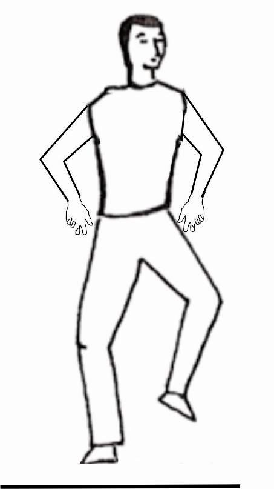

Conferência nº 37
PRÁTICA PARA O DESDOBRAMENTO ASTRAL: O SALTINHO
Para conseguir o Desdobramento Astral é necessário que pratiquemos no dia, dar saltinhos com o desejo de flutuar para verificar em que dimensão nos encontramos.
O estar repetindo durante o dia, perguntando-nos em que dimensão nos encontramos, nos ajuda a tomar Consciência, já que durante a noite se repetirá o que façamos durante o dia.
Descobriremos que nos encontramos em astral ao ver que flutuamos.
Cada vez que se mude de atividade se dá um saltinho com a intenção de flutuar no ambiente e pela noite aparecerá flutuando no astral e se dará conta em que dimensão está.
